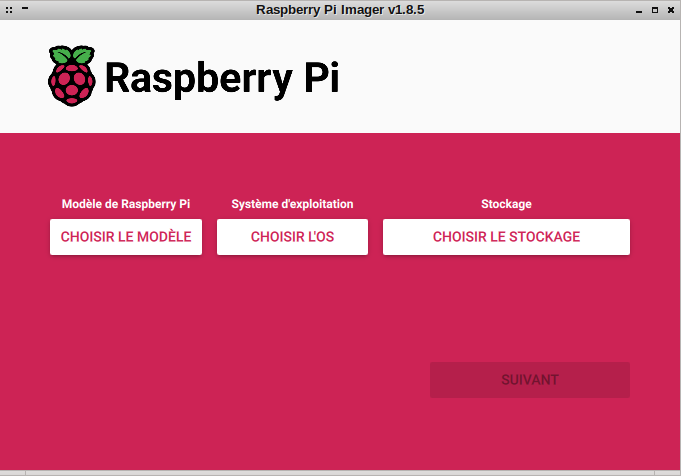

Contexte
Lors de la sortie du RaspberryPi en 2012, la préparation de la carte SD n’était pas chose aisée pour les débutants. Il fallait partitionner la carte SD à la main, préparer le système de fichiers, copier l’image.
Bref, le nouvel acquéreur était vite plongé dans un challenge technique qu’il n’imaginait pas.
Voir la fiche wikipedia du RaspberryPi
L’installeur rpi-imager
Plus récemment, même avec des utilitaire tel que Balena Etcher, ou Rufus, préparer sa carte ne donnait pas forcément le résultat escompté, même avec dd sous linux.
La société RaspberryPi propose maintenant rpi-imager, qui est une adaptation de Pi Bakery.
Avec cette outil, nous avons l’installation d’un OS la moins technique qu’il soit.
L’interface

Avec 3 menu aussi parlant difficile de se tromper.
- Choisir le modèle
- Choisir l’OS
- Choisir le stockage
choix du modèle
Depuis sa sortie, il y a eu de nombreuses évolutions du RaspberryPi de créé, le sélecteur permet facilement de trouver son modèle.
Choix de l’OS
Dés sa sortie, le premier OS à être porté sur ARM fut debian, qui donnera Raspbian et maintenant RaspberryOS.
Il existe d’autres projets, comme Recalbox un émulateur de jeu (Top!!), Kodi le gestionnaire de multimédia (ça marche bien!!), ou encore des plateformes de développement.
Personnellement, j’avais besoin d’un RapberryPi plus récent pour mettre à jour mon Pi-Hole, j’ai donc sacrifié ma Recalbox, provisoirement, j’ai gardé la carteSD, et je pourrais récupérer mes configurations, et mes ROM plus tard.
Il me fallait un serveur, j’ai alors pris Raspberry OS Lite.
Configuration personnallisée
Il est ppossible d’accéder à un menu, pour configurer le compte, et la connexion wifi.
- le hostname
- le user et le mot de passe
- le réseau wifi (oui, je trolle les bouzeux de voisins)
- préciser si le wifi est caché ou non
- la norme wifi
- le fuseau horaire (tz time zone)
- le type de clavier (les locales)
Encore une fois difficile de se tromper.
Activation du serveur SSH
Pour une installation dans son réseau local, il faut arrêter la parano, si vous avez peur de taper un mot de passe dans votre propre réseau: le problème est ailleur et déjà présent.
authentification par mot de passe ça ira très bien. On verra la création de clefs asymétrique dans un autre article, avec la configuration du serveur open-ssh.
Pour ma part, j’ai déjà des clefs ssh, et je ne peut pas laisser un soft écrire des clefs sans savoir ce qu’il va ce passer.
Finalisation ….
C’est pour faire, comme une vraie installation d’une debian. Jouer un son …. Bof, ça marche pas forcément, mais on s’en fout.
Ejecter le média, dans ce cas précis, il s’agit de la carteSD, mais en temps normale il est demandé d’éjecter l’ISO. Et de redémarrer, or nous ne sommes pas dans ce cas de figure.
Et forcément, comme dans tous les logiciels open-source, il est demandé si on veut envoyer des infos au serveur.
Ecriture
C’est parti, il suffit d’attendre.
Vérification de l’écriture
Il y a une vérification de l’écriture…. c’est normale, il suffit d’attendre.
Premier boot
J’avais branché un écran, pour voir, et une routine s’exécute pour correctement redimensionner les partitions.
Suite
Et bien, il faut aller sur votre box, pour être certain que votre pi, est bien détecté.
Lui réserver son IP, faire un reboot, etc…. du pi, par de la box.
Connexion SSH
ssh ordinatous@192.168.1.2
Oui, enfin ça sert un peu à rien de cacher l’IP….
Je suis bien connecté.
Création de la clef
ssh-keygen -f ~/.ssh/ordinatoused25519 -t ed25519 -b 4094
Copy de la clef
ssh-copy-id -i ~/.ssh/ordinatoused25519.pub ordinatous@192.168.1.2
Modification du .ssh/config
vi ~/.ssh/config
Host gallypi.ordinatous.local
Hostname 192.168.1.2
User ordinatous
Port 22
IdentityFile ~/.ssh/ordinatoused25519
Connexion par clef
ordinatous@gallyair:~$ ssh gallypi.ordinatous.local
Linux gallypi 6.6.74+rpt-rpi-v8 #1 SMP PREEMPT Debian 1:6.6.74-1+rpt1 (2025-01-27) aarch64
The programs included with the Debian GNU/Linux system are free software;
the exact distribution terms for each program are described in the
individual files in /usr/share/doc/*/copyright.
Debian GNU/Linux comes with ABSOLUTELY NO WARRANTY, to the extent
permitted by applicable law.
Last login: Mon Mar 17 21:49:28 2025 from 192.168.1.43
ordinatous@gallypi:~ $
Prochain article sur la configuration du serveur open-ssh